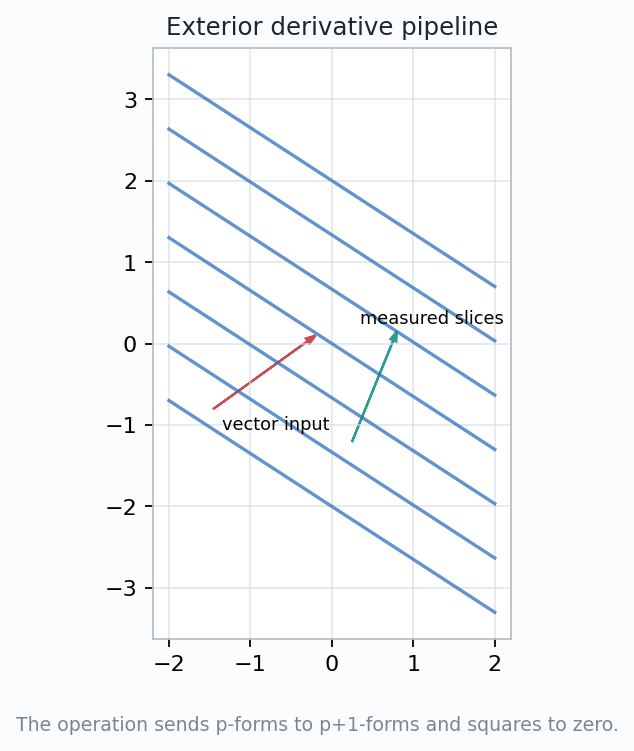
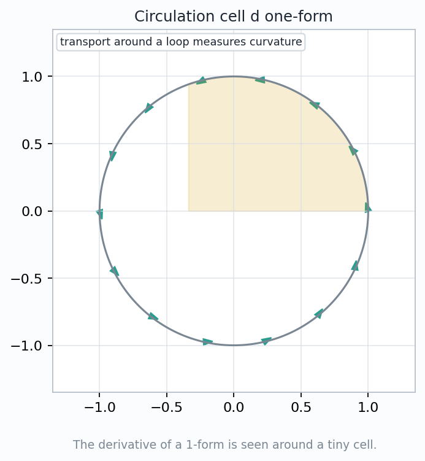
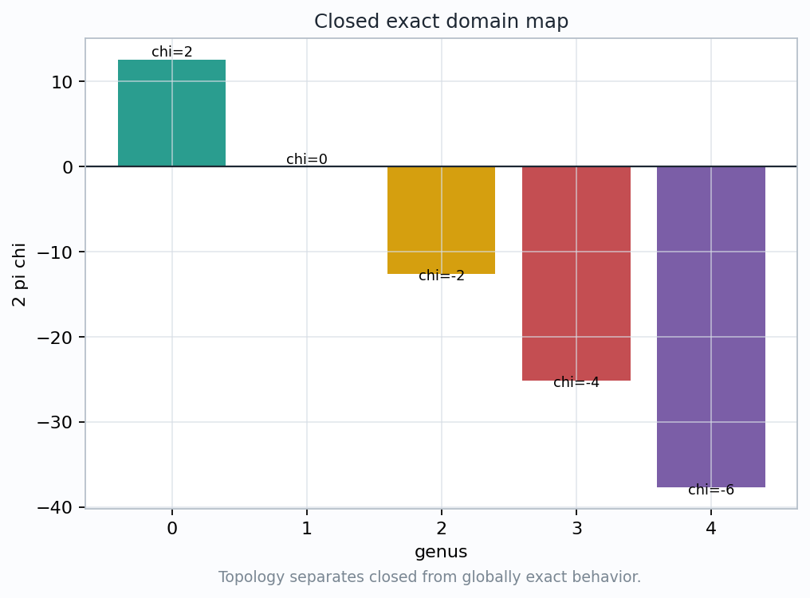
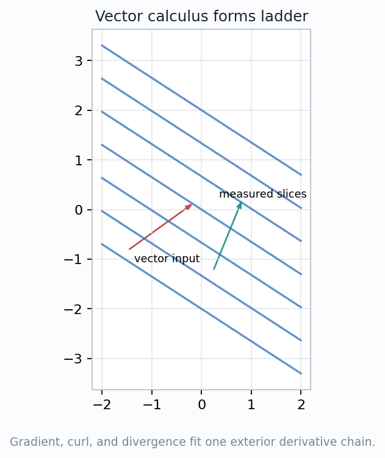

Exterior differentiation turns local variation of a form into the next-degree boundary detector.
How does exterior differentiation turn local variation into a form?
$$d:\Omega^p(M)\longrightarrow\Omega^{p+1}(M),\qquad d^2=0.$$
Start with a tiny loop, extract coefficient variation, track graded signs, then connect closed/exact forms to vector calculus and Stokes-style thinking.

For a tiny oriented \((p+1)\)-cell \(C\),
$$d\omega(C)\;\approx\;\frac{\int_{\partial C}\omega}{\operatorname{vol}(C)}.$$
The local statement scales up to \(\int_C d\omega=\int_{\partial C}\omega\) once cells tile a region and interior boundaries cancel.
The symbol \(d\) is not a coordinate gradient. It is the coordinate-free boundary-variation operator.
If \(\alpha=P(x,y)\,dx+Q(x,y)\,dy\), then
$$d\alpha=\left(\frac{\partial Q}{\partial x}-\frac{\partial P}{\partial y}\right)dx\wedge dy.$$
The top and bottom edges compare \(P\) as \(y\) varies. The right and left edges compare \(Q\) as \(x\) varies. Orientation subtracts the reversed comparisons.
The coefficient of \(dx\wedge dy\) is the signed circulation density around the cell.
Both partial derivatives matter because the form reads tangent directions along every edge, not only arrows inside the region.

For a coordinate \(p\)-form \(\omega=\sum_I a_I\,dx^I\),
$$d\omega=\sum_{I,j}\frac{\partial a_I}{\partial x^j}\,dx^j\wedge dx^I.$$
$$d(Pdx+Qdy)=\left(Q_x-P_y\right)dx\wedge dy.$$
$$d(P\,dy\,dz+Q\,dz\,dx+R\,dx\,dy)$$
$$=(P_x+Q_y+R_z)\,dx\,dy\,dz.$$
Each derivative contributes a new direction; wedges reorder that direction into the oriented basis and assign the sign.
For \(\alpha\in\Omega^p(M)\),
$$d(\alpha\wedge\beta)=d\alpha\wedge\beta+(-1)^p\,\alpha\wedge d\beta.$$
The derivative of \(\beta\) has to move past the \(p\) slots of \(\alpha\). Each slot crossing contributes an orientation swap.
The sign is not optional notation. It is the orientation cost of moving differential pieces past each other.
$$d(d\omega)=0.$$
$$d(df)=\sum_{i
Taking a boundary twice leaves every lower-dimensional face counted twice with opposite orientations.
The coordinate cancellation uses smooth coefficients, so mixed partial derivatives commute.
$$\omega\ \text{closed}\quad\Longleftrightarrow\quad d\omega=0.$$
$$\omega\ \text{exact}\quad\Longleftrightarrow\quad \omega=d\eta.$$
$$\omega=d\eta\quad\Longrightarrow\quad d\omega=d^2\eta=0.$$
Closed says the local boundary detector sees no variation. Exact says the form is globally a derivative of a lower-degree potential.
On a domain with holes, a closed form can still carry a nonzero period around a noncontractible loop.

For \(f=u+iv\),
$$f\,dz=(u\,dx-v\,dy)+i(v\,dx+u\,dy).$$
$$d(u\,dx-v\,dy)=(-v_x-u_y)\,dx\wedge dy,$$
$$d(v\,dx+u\,dy)=(u_x-v_y)\,dx\wedge dy.$$
\(u_x=v_y\) and \(u_y=-v_x\) say the two boundary detectors vanish together.
Exterior differentiation turns a familiar analytic condition into a visible cancellation condition for oriented rectangles.

$$\Omega^0 \xrightarrow{\,d\,} \Omega^1 \xrightarrow{\,d\,} \Omega^2 \xrightarrow{\,d\,} \Omega^3.$$
\(d\phi\) is the gradient covector field.
\(dA^\flat\) is curl as a flux-like 2-form.
\(dB\) is divergence as a volume-source 3-form.
\(d^2=0\) explains curl grad and div curl identities.
$$dF=0,\qquad d{*F}=J.$$
The Hodge star \(*\) uses the metric; the exterior derivative supplies the boundary law.
$$\int_U d\omega=\int_{\partial U}\omega.$$
The boundary readings of \(\omega\) fail to cancel exactly when the interior has a nonzero \(d\omega\) density.
For \(\alpha=-y\,dx+x\,dy\), \(d\alpha=2\,dx\wedge dy\). The disk's area reading equals the circulation density accumulated around its boundary.